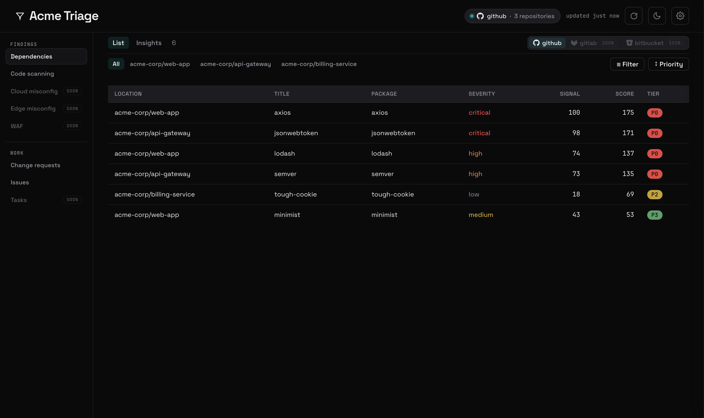

Backend-free repo triage. One HTML file.
Triage your GitHub Dependabot alerts and code-scanning findings in a single self-contained dashboard. No server, no build step on your side — paste a token, pick your repos, and start deciding what to fix first.
Launch app →
Or build your own
$ npx triagekit build

- Nothing phones home. Strict hash-based CSP; your token lives in this tab only, never embedded in the output.
- One portable file. The compiled dashboard is a single HTML file you can commit, share, or host anywhere.
- Config-driven. Point it at repos, tune severity scoring and views from a small YAML config.